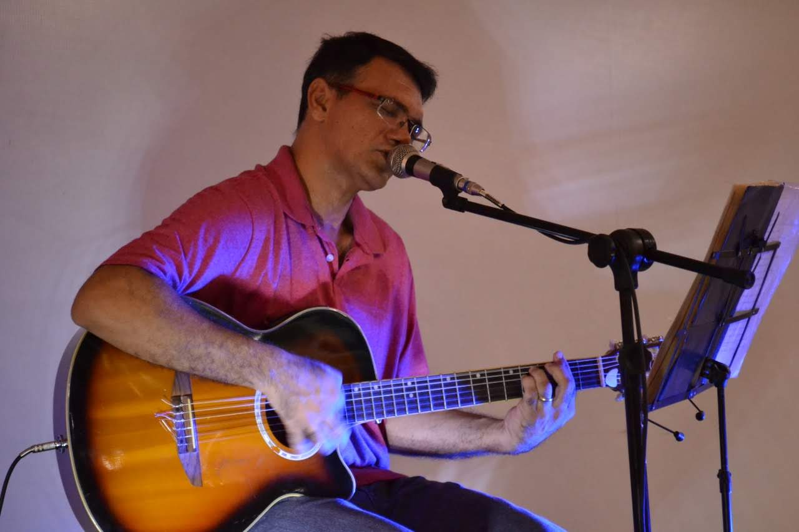

Um pouco do trabalho
Mídia
Aqui você confere trechos ao vivo, bastidores e o clima das apresentações.
Repertório para momentos animados e também para ambientes mais intimistas, sempre no formato voz e violão.
Acompanhe os vídeos e veja o estilo que mais combina com seu evento.
